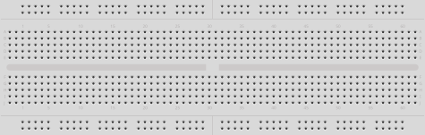
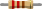

Solderless breadboard
Connected terminal groups hold components without solder.

220 Ω resistor
Red–red–brown value bands. A ¼ W part is ample for this circuit.
5 mm red LED
Polarized component: anode to the resistor, cathode to ground.